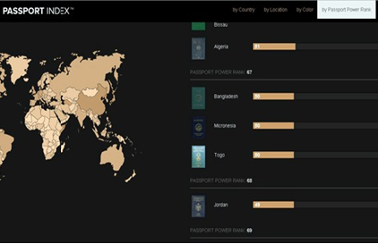

একজন বাংলাদেশি হিসেবে আপনি গর্ব করতেই পারেন। কারণ ভিসা ছাড়াই শুধু বাংলাদেশের পাসপোর্টের জোরে আপনি ৫০টি দেশ ভ্রমণ করতে পারবেন। আর্থিক খাতের পরামর্শক প্রতিষ্ঠান আরটন ক্যাপিটাল প্রভাবশালী পাসপোর্টের তালিকা তৈরি করেছে, যেখানে বাংলাদেশের অবস্থান ৬৭তম। অরটন ক্যাপিটালের নিয়ন্ত্রিত পাসপোর্ট ইনডেস্ক ডটঅর্গ ওয়েবসাইট সূত্রে জানা গেছে, বাংলাদেশি পাসপোর্টধারীরা ৫০টি দেশে ভিসা ছাড়াই ভ্রমণ করতে পারেন। এ দেশগুলোর কয়েকটিতে বাংলাদেশি পাসপোর্টধারীদের কোনো ভিসার প্রয়োজনই হয় না। বাকি দেশগুলোর প্রায় সবগুলোর ক্ষেত্রেই সেখানে পৌঁছে ‘অন অ্যারাইভাল ভিসা’ করে নিতে হবে। আর, দু-একটি দেশের ক্ষেত্রে ভিন্ন ব্যবস্থা প্রযোজ্য। পাসপোর্ট ইনডেক্স ডটঅর্গে বিভিন্ন দেশের পাসপোর্টের প্রভাব নিয়ে ৮০ পর্যন্ত তালিকা করা হয়েছে, যেখানে বাংলাদেশের অবস্থান ৬৭। কোনো দেশের পাসপোর্টধারী ভিসা ছাড়াই অন্য দেশের যাওয়ার সংখ্যার ভিত্তিতে এই তালিকা করা হয়েছে। বাংলাদেশ ছাড়াও মাইক্রোনেশিয়া ও টোগোর পাসপোর্টধারীরা ভিসা ছাড়াই ৫০টি দেশে ভ্রমণ করতে পারেন। পাসপোর্টের প্রভাবের তালিকায় সার্কভুক্ত দেশগুলোর অবস্থান হলো, আফগানিস্তান ৭৯ (পূর্বে ভিসা লাগবে না ৩৮ দেশে), ভারত ৫৯ (ভিসাহীন ৫৯), পাকিস্তান ৭১ (ভিসাহীন ৪৬), মালদ্বীপ ৫৩ (ভিসাহীন ৬৫), নেপাল ৭৯ (ভিসাহীন ৩৮), ভুটান ৭৯ (ভিসাহীন ৪০), শ্রীলংকা ৭০ (ভিসাহীন ৪৭)।
বিশ্বের সবচেয়ে প্রভাবশালী পাসপোর্ট হলো যুক্তরাজ্য ও যুক্তরাষ্ট্রের। তালিকায় এক নম্বরে থাকা দেশ দুটির পাসপোর্ট দিয়ে ভিসা ছাড়াই ১৪৭ টি দেশে যাওয়া যায়। আর তালিকার একদম তলানিতে ৮০তম অবস্থানে আছে সাওটম ও প্রিন্সিপে, ফিলিস্তিন, সলোমন আইল্যান্ড, মিয়ানমার ও দক্ষিণ সুদান। এই দেশগুলোর পাসপোর্টে মাত্র ২৮টি দেশে ভিসা ছাড়া প্রবেশাধিকার আছে। বাংলাদেশি পাসপোর্টধারীদের ৫০টি দেশে ভিসা ছাড়াই প্রবেশের অনুমতির কথা বলা হলেও পার্সপোর্ট ইনডেস্ক ডট অর্গ দেশগুলোর তালিকা প্রকাশ করেনি। আর উইকিপিডিয়া ও বিভিন্ন দেশের দূতাবাস সূত্রে নিন্মোক্ত ৪৪ টি দেশের ব্যাপারে নিশ্চিত হওয়া গেছে।
বাংলাদেশীদের কোনো ভিসাই লাগবে না এমন দেশগুলো হলো
১. বাহামাস (৪ সপ্তাহ পর্যন্ত)
২. বার্বাডোস (৬ মাস)
৩. ডোমিনিকা (৬ মাস)
৪. ফিজি (৪ মাস)
৫. গাম্বিয়া (৩ মাস)
৬. গ্রানাডা (৩ মাস)
৭. হাইতি (৩ মাস)
৮. জ্যামাইকা
৯. লেসোথো (৩ মাস)
১০. মালাওয়ি (৩ মাস)
১১. মাইক্রোনেশিয়া (১ মাস)
১২. সেইন্ট কিটস অ্যান্ড নেভিস
১৩. সেইন্ট ভিনসেন্ট অ্যান্ড দ্য গ্রানাডিনস (১ মাস)
১৪. ত্রিনিদাদ অ্যান্ড টোবাগো
১৫. ভানুয়াতু (১ মাস)
১৬. মন্টসেরাত (৩ মাস)
১৭. টার্ক অ্যান্ড সিসেরো আইল্যান্ড (১ মাস)
১৮. ব্রিটিশ ভার্জিনিয়া আইল্যান্ড (১ মাস)
১৯. নিউয়ি (১ মাস)
ভিসা ছাড়াই যেতে পারবেন, তবে পৌঁছে ভিসা করতে হবে এমন দেশগুলো হলো:
১. ভুটান
২. বলিভিয়া (তিন মাসের ভিসা)
৩. কেপ ভার্দে
৪. কমোরোস
৫. গিনি বিসাউ (তিন মাস)
৬. মাদাগাস্কার (তিন মাস)
৭. মালদ্বীপ (এক মাস)
৮. মাওরিতানিয়া
৯. মোজাম্বিক (এক মাস)
১০. নেপাল (এক মাস)
১১. নিকারাগুয়া (তিন মাস)
১২. তিমরলেস্টে (এক মাস)
১৩. টোগো (সাত দিন)
১৪. তুভালু (এক মাস)
১৫. উগান্ডা
১৬. বুরুন্ডি
১৭. জিবুতি (এক মাস)
১৮. আজারবাইজান (এক মাস)
১৯. ম্যাকাউ (এক মাস)
ভিসা লাগবে না তবে বিশেষ অনুমোদন লাগবে এমন দেশগুলো হলো:
১. কিউবা (টুরিস্ট কার্ড জোগাড় করতে হবে, মেয়াদ তিন মাস)
২. সামোয়া (ঢোকার অনুমতিপত্র থাকলেই হলো, মেয়াদ দুই মাস)
৩. সেচেলেস (ভ্রমণের অনুমতিপত্র থাকতে হবে, মেয়াদ এক মাস)
৪. সোমালিয়া (ওই দেশে থাকা কেউ স্পন্সর করলে ভিসা পৌঁছেও করা যাবে, যার মেয়াদ হবে এক মাস। তবে সোমালিয়া পৌঁছানোর দুদিন আগে সেখানকার বিমানবন্দরে বিষয়টি জানিয়ে রাখতে হবে)
৫. শ্রীলংকা (ভ্রমণের জন্য ইলেকট্রনিক অনুমোদনপত্র, মেয়াদ এক মাস)
৬. লাওস (সরকারি কোনো সফরের নথিপত্র থাকলে ভিসা প্রয়োজন হবে না)